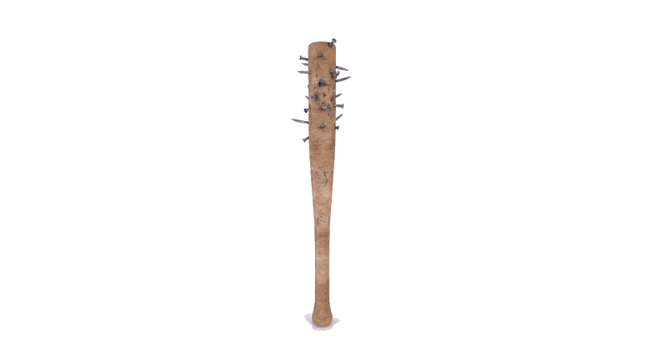

DIÁLOGO
MARCOS
Web Design
Aplicando animações com apenas CSS



O carro perguntou para o outro carro qual era o carro mais rápido, e o carro respondeu para o carro que o carro mais rápido é o carro rápido. O cachorro perguntou para o outro cachorro qual era o cachorro mais cachorrinho, e o cachorro respondeu para o cachorro que o cachorro mais cachorrinho é o cachorro cachorrinho.

O livro perguntou para o outro livro qual era o livro mais livro de todos, e o livro respondeu para o livro que o livro mais livro é o livro livro. A flor perguntou para a outra flor qual era a flor mais florida, e a flor respondeu para a flor que a flor mais florida é a flor florida.